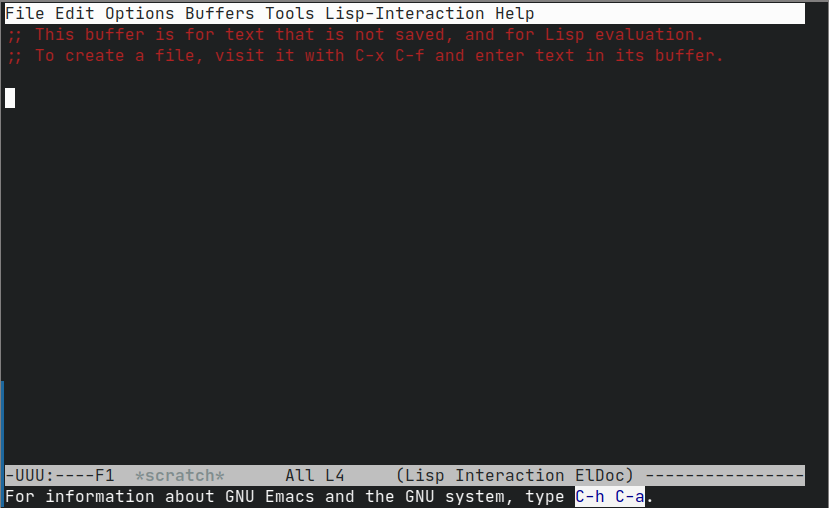
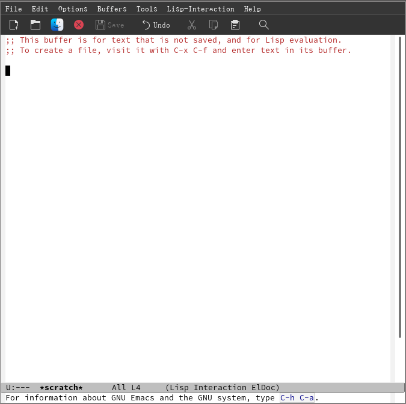

从vim转移到emacs
Table of Contents
随手记下我是怎么从一个Vim用户转为一位Emacs用户的（实际上是脚踏两条船）
警告，这篇文章不是教程，只是我转变的新路历程，仅对大的方向有参考作用
1. 开始
1.1. 原因
最开始的原因是，看到别人吹emacs的org-mode有多么厉害，功能多么强大，而vim下安装插件也只是模仿了一半而已，功能残缺。出于“试一试”的心态，我就第一次安装了Emacs
1.2. 几次失败
既然是第一次，那么在我打开的一瞬间，我就觉得那些夸emacs好的人是不是在搞诈骗，因为它的初始的默认的界面其实异常地丑，给人一种极端复古的感觉。下面是两张Emacs终端界面和图形界面的截图（非开始界面）

Figure 1: 终端界面

Figure 2: 图形界面
这种界面给我的第一印象就是： 简陋 。
我很难理解为什么一个被夸赞成“神的编辑器”居然看起来是如此地简陋。我甚至一度怀疑那些界面好看的Emacs都是虚假的。就这么，我放弃了Emacs，回到了Vim的舒适区内。后来我又尝试过几次，都都没有坚持下去。僵持近一年后，就到了23年1月，我开始了最后一次尝试，也是唯一成功的一次。
2. 上手
2.1. 先前阶段的学习
实际上，无配置的Emacs的开始界面并非如上图所示，而是有一个开始页面。在这个页面中，我看见了个字眼: tutor 。它是什么意思我并不清楚，但是我知道在安装Vim后会有一个命令： vimtutor ，我但是就判断：这很有可能是Emacs的教程，加上在图形界面Emacs是默认开启了鼠标操作的，于是我就用鼠标打开了" Emacstutor "，正式开启了对Emacs的学习
2.1.1. 键位问题
Emacs的这份帮助文档是中文的，这极利于我学习Emacs，而摆在所有Vim党前面的最大问题实际上是Emacs看似十分不合理的键位布局。由于没有像Vim里的“编辑模式”这种东西，所以说它的大多数快捷键都是通过“ 叠Buff ”给叠起来的简单来说就是套娃。再通俗一点就是先按下一套快捷键，再按下另一套快捷键实现对应的功能，只有常用的快捷键不用“套娃”，如移动、复制、删除等。
但是有一个大问题，Emacs的快捷键对于Alt键和Ctrl键有着极强的依赖。对于我来说，Alt键可以很轻松地按下——只需要左手大拇指向内勾，但是Ctrl就不是省油的灯了。因为Emacs的移动就是使用C-bnpf 1 来移动的，所以说这对于小拇指的工作压力是极大的。为什么会有这种问题呢？那是因为Emacs的键位并非是按照现在的键盘设计的，所以说会有这种“逆天”的快捷键组合。
但是实际上，这个问题是有解的，解一就是让 Caps Lock（大写锁定） 和 Ctrl 两个按键调换功能，或者是直接让 Caps Lock 直接变成 Ctrl 键。但方法2我就不在此赘述。
解二实际上现实得多，也对新手特别是Vim党特别友好——使用Evil
- Evil
首先，我先下个定义： Evil 是一个Emacs的插件。不同于Vim，Emacs有一个内置的插件管理器和一个较为统一的插件仓库EPLA。它似乎又有一些其他的分支，
GNU MPLA是GNU Emacs的官方插件仓库，而MEPLA则是一个非官方插件仓库。不管怎样，我还是将全部的仓库放入了配置文件3里：;; 添加仓库 (require 'package) ;(add-to-list 'package-archives '("melpa" . "https://melpa.org/packages/") t) (setq package-archives '( ("melpa" . "http://mirrors.tuna.tsinghua.edu.cn/elpa/melpa/") ("gnu" . "http://mirrors.tuna.tsinghua.edu.cn/elpa/gnu/") ("org" . "http://mirrors.tuna.tsinghua.edu.cn/elpa/org/"))) (package-initialize)为了速度，我并不是使用其官方仓库地址，而是清华镜像。同众多的Linux发行版一样，Emacs的插件仓库是有镜像的，实际上用户也可以自己构建一个本地镜像源。不过我比较懒，不想那么做。
2.1.2. 插件管理
在Emacs的配置文件中加入了上述配置后，就可以使用 M-x list-packages 或者是使用 M-x package-list-packages 来列出插件列表。其中的操作如下表：
| 按键 | 功能 |
|---|---|
| d | 标记删除插件 |
| i | 标记安装插件 |
| U | 升级所有可升级的插件 |
| x | 执行标记的操作 |
| q | 退出插件列表 |
这样，我们就可以用它来方便地安装插件了。下面再介绍一种再配置文件中安装并配置插件的办法：使用 use-package
- use-package
想要使用它，你需要先手动安装use-package插件， 并在配置文件中加入：
(eval-when-compile (require 'use-package))
意思就是加载use-package插件，然后你就可以使用一个“宏”来管理插件：
(use-package foo :ensure t ;; 确认插件存在（不存在则自动安装） :init (function) ;; 初始化的设置，一般是启动某个函数 :config (function) ;; 配置方面，定义功能，设置变量 :hook (hook . function)) ;; 定义hook，针对特定major mode的设置
它的作用通常是在安装了插件后进行相应的配置，利用这一特性，也可以通过它来让你的配置更加“ 模块化 ”
2.1.3. 配置
这一方面我的做法是根据自己的需求（大都是想复现我在Vim配置好的功能），上网搜相应的资料抄作业。但是不知为什么，我在网上搜索到的资料比较少且大都比较杂乱，令我费解，就算是抄下来也总是出现各种莫名其妙的报错。
实际上我看过这么一篇文章4，里面有一个观点： 站在巨人的肩膀上 ，意为新手要先把大牛的配置抄下来学习，不要尝试自己从头建立一份配置。我并不反对这一观点，并且我还尝试了他推荐的purcell的Emacs配置。确实，相对于我自己的配置来说（也许）更快，但我觉得有一些缺点是没有办法弥补的。别人的配置总有一些是我不需要的，也会缺少一些我需要的功能，而自己胡乱去加，又有可能引发奇怪的bug。所以说我也只是把这些配置当成抄作业的对象，但不是首要的。毕竟我不想一遍遍去看完它的所有文件。
Footnotes:
即Ctrl-b（向左）、Ctrl-n（向下）、Ctrl-p（向上）、Ctrl-f（向左）
在Emacs中（其实这套方案大都通用）， Key-key 通常表示要从左到右同时按下的按键，而 Key key 则是先按下 Key 后再按下 key 的快捷键组合
这里仅补充Linux如何设置按键映射。
在X环境下请参考这篇ArchWiki学习使用setxkbmap并参考其中的这段文字学习查看相关选项。这里给出相关命令及其结果
# 查询相关选项 $ grep -e "ctrl:\|:ctrl" /usr/share/X11/xkb/rules/evdev.lst grp:ctrl_select Left Ctrl to first layout; Right Ctrl to second layout grp:ctrls_toggle Both Ctrls together grp:ctrl_shift_toggle Ctrl+Shift grp:ctrl_alt_toggle Alt+Ctrl grp:ctrl_space_toggle Ctrl+Space ctrl:nocaps Caps Lock as Ctrl ctrl:lctrl_meta Left Ctrl as Meta ctrl:swapcaps Swap Ctrl and Caps Lock ctrl:hyper_capscontrol Caps Lock as Ctrl, Ctrl as Hyper ctrl:ac_ctrl To the left of "A" ctrl:aa_ctrl At the bottom left ctrl:rctrl_ralt Right Ctrl as Right Alt ctrl:menu_rctrl Menu as Right Ctrl ctrl:swap_lalt_lctl Swap Left Alt with Left Ctrl ctrl:swap_lwin_lctl Swap Left Win with Left Ctrl ctrl:swap_rwin_rctl Swap Right Win with Right Ctrl ctrl:swap_lalt_lctl_lwin Left Alt as Ctrl, Left Ctrl as Win, Left Win as Left Alt caps:ctrl_modifier Make Caps Lock an additional Ctrl altwin:ctrl_win Ctrl is mapped to Win and the usual Ctrl altwin:ctrl_rwin Ctrl is mapped to Right Win and the usual Ctrl altwin:ctrl_alt_win Ctrl is mapped to Alt, Alt to Win terminate:ctrl_alt_bksp Ctrl+Alt+Backspace # 设置选项，这是让Caps Lock映射到Ctrl Left $ setxkbmap -option 'caps:ctrl_modifier' # 这是让Caps Lock和Ctrl Left互换 $ setxkbmap -option 'swapcaps'
若是在无图形界面环境下，请参考这篇ArchWiki学习配置，其中这段是交换按键的具体例子。这里再附上中文版本连接和片段连接。希望能有帮助。
这两个链接的文章是相同的，这里只是提供两个入口 在Github的文章 在CSDN的文章